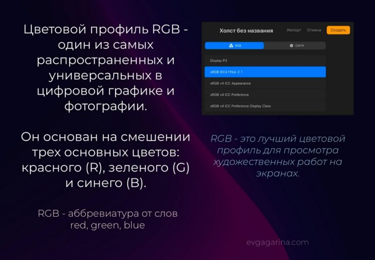
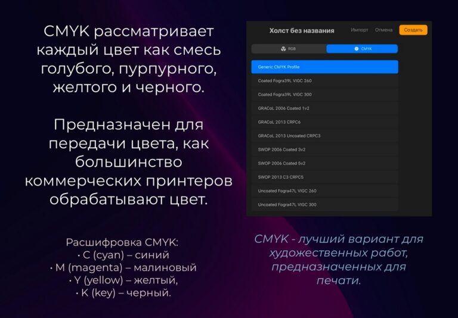

Цветовой профиль в Procreate. Какой выбрать?

При создании холста в Procreate мы можем выбрать цветовой профиль, который потом поменять на противоположный уже не получится. Давайте разберём оба.
RGB
RGB (Red, Green, Blue) — профиль для цифровых экранов: телефонов, планшетов, мониторов. Он передаёт более яркие, насыщенные цвета, как будто с подсветкой.

Если иллюстрация не предназначена для печати, выбирайте RGB. Даже если решите напечатать работу для себя, этот профиль подойдёт. Но если иллюстрации готовятся для заказчиков, лучше выбрать CMYK: при подготовке к печати работы в RGB цвета придётся переводить в CMYK в Photoshop.
CMYK
CMYK (Cyan, Magenta, Yellow, Key/Black) — профиль, который используют в печати. Цвета в нём выглядят тише и приглушённее, особенно яркие неоновые и чистые оттенки.

Если вы готовите иллюстрацию для печати — постеры, открытки, календари, — используйте CMYK, чтобы сразу видеть реальный результат.
Иллюстрация потускнела после перевода в CMYK?
- Повысьте контраст: сделайте тени и светлые участки активнее.
- Работайте локально с цветом объекта: добавляйте акценты, тёплые и холодные оттенки.
- Используйте корректирующие настройки по слоям: «Кривые», «Тон, насыщенность, яркость».
Похожие записи